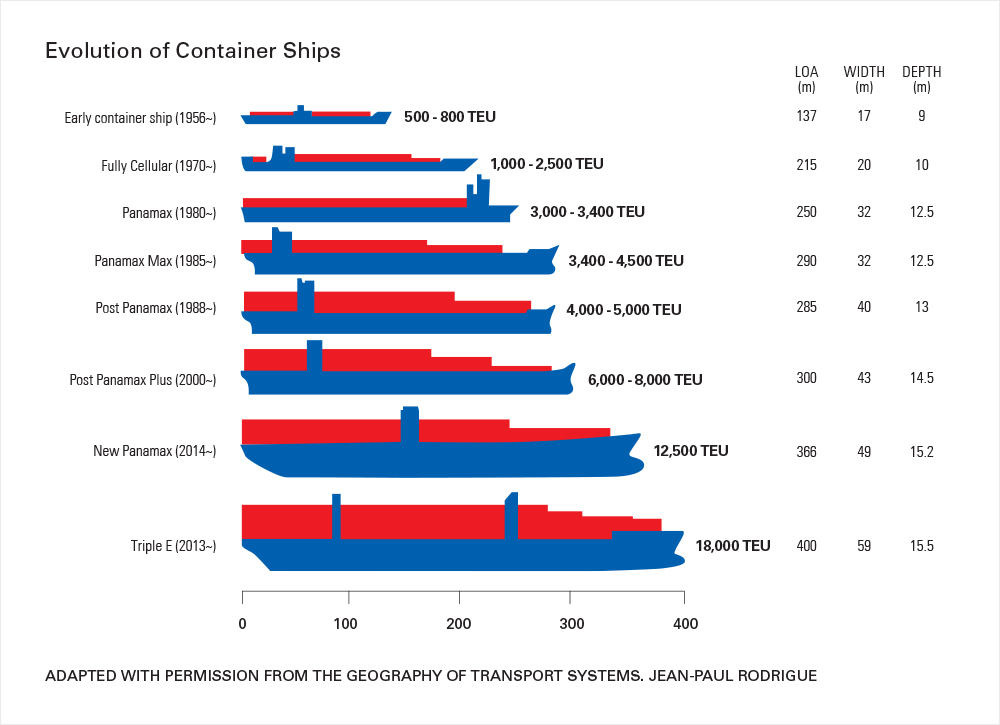
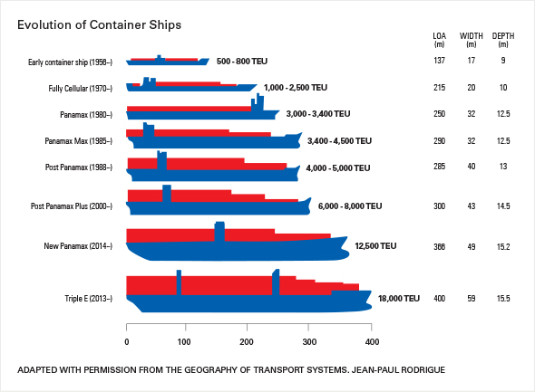
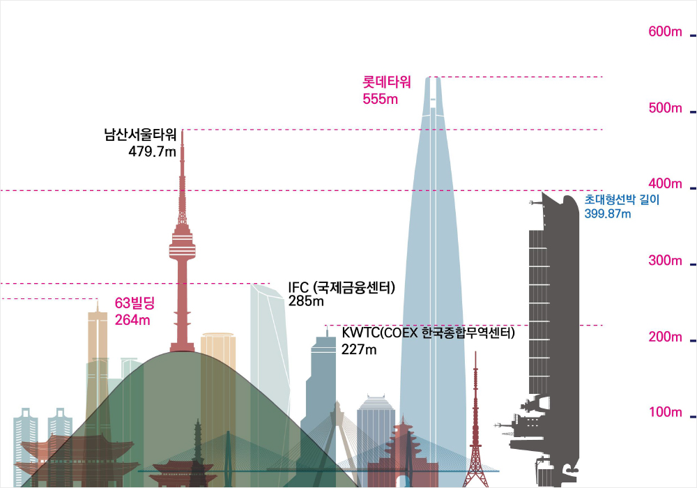
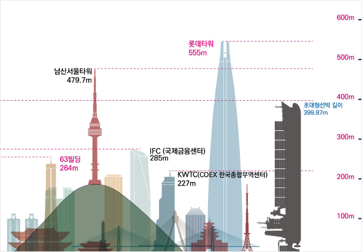
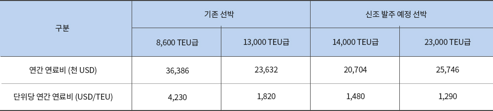
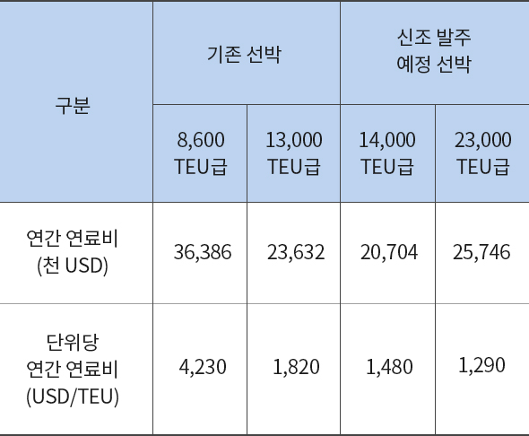

와 제 롤모델이 잡스에요!!! 아이폰 첫 출시되고 나서부터 계속 아이폰 쓰고 있는데 잡스가 너무 그리워요ㅠㅠ 지금은 돈만 벌려고 하는 것 같아서 디자인 발전도 없고ㅠㅠ와 제 롤모델이 잡스에요!!! 아이폰 첫 출시되고 나서부터 계속 아이폰 쓰고 있는데 잡스가 너무 그리워요ㅠㅠ 지금은 돈만 벌려고 하는 것 같아서 디자인 발전도 없고ㅠㅠ와 제 롤모델이 잡스에요!!! 아이폰 첫 출시되고 나서부터 계속 아이폰 쓰고 있는데 잡스가 너무 그리워요ㅠㅠ 지금은 돈만 벌려고 하는 것 같아서 디자인 발전도 없고ㅠㅠ와 제 롤모델이 잡스에요!!! 아이폰 첫 출시되고 나서부터 계속 아이폰 쓰고 있는데 잡스가 너무 그리워요ㅠㅠ 지금은 돈만 벌려고 하는 것 같아서 디자인 발전도 없고ㅠㅠ와 제 롤모델이 잡스에요!!! 아이폰 첫 출시되고 나서부터 계속 아이폰 쓰고 있는데 잡스가 너무 그리워요ㅠㅠ 지금은 돈만 벌려고 하는 것 같아서 디자인 발전도 없고ㅠㅠ
해운 이야기
왜 23,000TEU급 초대형
컨테이너선인가?
컨테이너선인가?
기존 선박 대비 30~70% 연료비 절감 가능
TEU당 530$ 이상 절약, 연간 100억 원 이상 ‘효과’
스크러버 장착으로 ‘황산화물 환경규제’도 극복
23,000TEU급 12척 포함 총 20척 준비
컨테이너를 수송하기 위한 전용 선창을 갖추고 있는 선박인 컨테이너선의 크기는 적재할 수
있는 20피트 컨테이너(TEU: Twenty-foot Equivalent Unit, 길이 6.1m)로 나타낸다.
18,000개 이상의 20피트 컨테이너를 적재할 수 있는 컨테이너선을 초대형 컨테이너선
(ULCV: Ultra Large Container Vessel)이라고 부르는데, 현재 세계에서 가장 큰 컨테이너선은
21,413TEU의 컨테이너를 한꺼번에 수송할 수 있을 정도로 선박의 대형화 추세가 갈수록
뚜렷해지고 있다. <바다소리>가 컨테이너 선박 대형화의 역사와 장점을 정리해 봤다.
글
편집실


그림1컨테이너선의 대형화
출처: “The Geography of Transport Systems” by Jean-Paul Rodrigue
컨테이너선의 비약적인 발전
1957년 미국의 씨랜드(Sea Land)사가 휴스턴과 뉴욕 사이의 연안 수송에 소형 유조선을 개조한 최초의 컨테이너선 게이트 웨이 시티(Gate Way City)호를 투입하면서 컨테이너선의 역사가 시작되었다.
1980년대까지는 당시 파나마운하를 통과할 수 있는 폭 32m, 길이 295m의 5,000TEU급 이하 파나막스급 컨테이너선이 주력이었고, 이후 1990년대 중반으로 넘어가면서 세계적인 물동량 증가에 따라 5,000TEU급 이상의 포스트 파나막스 컨테이너선이 등장하기 시작했다.
이후, 파나마운하가 2016년 6월에 확장 개통한 이후 폭 49m, 길이 366m의 13,000TEU급 네오 파나막스 컨테이너선 통항이 가능해지면서 2000년대부터 컨테이너선의 대형화 추세가 선박건조 기술의 발전과 함께 빠른 속도로 본격화되었다. <그림1 참조>
한편, 현재 세계에서 가장 큰 23,000TEU급 초대형선박의 길이는 399.87m로 63빌딩보다 크고 우리나라에서 제일 높은 건물인 555m의 롯데타워 보다는 작다. <그림2 참조>


그림223,000TEU급 초대형선박의 길이
출처: KMI 인포그래픽 통권 제2호(2018)
기존 선박 대비 향상된 연비 등으로 비용절감 효과 우수
초대형 컨테이너선은 운항 속도와 환경에 따라 자동으로 연료를 조절하는 전자제어식엔진(ME엔진)을 장착해 기존 선박 대비 연료효율이 20% 이상 우수하다.
또 한번에 많은 양의 화물을 실어 나를 수 있기 때문에 수송하는 컨테이너 단위당 비용이 낮아져 선사 입장에서는 투입되는 비용을 획기적으로 낮출 수 있다는 장점이 있다. TEU당 연간 연료비는 기존 13,000TEU급에 1,820달러가 투입되는 반면,
23,000TEU급 초대형 컨테이너선에는 1,290달러가 투입되어 530달러 정도 절감할 수 있게 된다. <그림3 참조>


그림3현대상선 컨테이너선 연료 소모량 비교
출처: 현대상선
이는 초대형 컨테이너선의 TEU당 연간 연료비가 기존 13,000TEU급 선박 대비 약 70% 수준인 셈이다. 8,600TEU급과 비교하면 30% 수준에 불과하다. 선박 운항비용 중 연료비가 차지하는 비중이 50~60%에 달하는 만큼 초대형 컨테이너선을 통한 연료비 절감 여부가 해운사의 경쟁력을 좌우하는데, 가히 획기적인 수준이라고 할만하다.
현대상선은 세계적인 컨테이너선 대형화 추세에 맞춰 지난 6월에 세계 최대 규모인 23,000TEU급 12척과 14,000TEU급 8척을 건조할 조선소 선정을 마치고 건조계약 체결을 앞두고 있다. 앞으로 현대상선은 선복량을 확대해 규모의 경제를 통한 원가 경쟁력을 갖추고, 2020년 발효되는 국제환경규제에 대비한 선단 구성이 가능해질 전망이다. 또한, 치열해지는 글로벌 경쟁 속에서도 안정적인 수익 기반을 마련해 중장기적으로 해운강국의 위상을 회복하고 대한민국의 수출 경쟁력을 확보할 것으로 기대하고 있다.
지난 20여 년간 이어져 온 컨테이너선의 대형화 경쟁이 앞으로 어디까지 진행될 것인지 지켜보는 것도 매우 흥미로울 듯하다.
-
최고예요
322
-
좋아요
322
-
슬퍼요
322
-
그저그래요
322
-
화나요
322